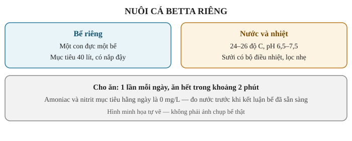

Nuôi cá betta cho người mới: bể riêng, sưởi, lọc nhẹ và nắp đậy
Tác giả: Ruler
Cá betta là loài cá đầu tiên của rất nhiều người mới, và cũng là loài bị nuôi sai nhiều nhất. Lý do rất đơn giản: betta sống được một thời gian trong cốc nhựa nhỏ ở cửa hàng, nên người mua tưởng rằng cốc nhỏ là nhà của nó. Thực tế thì cốc nhỏ chỉ là nơi bán hàng tạm thời, không phải nơi ở lâu dài. Betta là cá nhiệt đới, cần nước ấm ổn định, cần lọc, cần chỗ nghỉ gần mặt nước và cần một cái nắp vì nó nhảy rất giỏi. Bài này viết riêng về cách nuôi một con betta đực một mình, vì đó là cách nuôi an toàn nhất cho người mới. Bài không hướng dẫn nuôi hai con betta đực chung một bể, không hướng dẫn ép cá đẻ, và không hướng dẫn nuôi betta chung với bể cộng đồng đông cá, vì ba việc đó đều cần kinh nghiệm hơn nhiều.
10 loại cá cảnh dễ nuôi nhất cho người mới đã giới thiệu betta ngắn gọn trong bảng 10 loài. Bài này đi sâu vào từng món đồ trong bể betta, từng con số nước và từng thói quen hằng ngày. Chu trình nitơ chỉ được nhắc ngắn ở đây, vì đã giải thích đầy đủ ở Cách xử lý nước mới trước khi thả cá. Cách cho ăn đúng chỉ được nhắc ngắn, vì đã giải thích đầy đủ ở Cho cá cảnh ăn đúng cách: bao nhiêu, mấy lần và lỗi thường gặp. Nếu bạn chưa đọc hai bài đó, hãy đọc Cách xử lý nước mới trước khi thả cá trước khi mua cá, rồi quay lại bài này để chọn đồ cho bể betta.
Betta là cá gì, và vì sao phải nuôi riêng

Betta, tên thường gọi là cá xiêm hay cá chọi Xiêm, tên khoa học là Betta splendens. Seriously Fish viết loài này là cá mê cung (labyrinth) sống ở vùng trung tâm Thái Lan, trong ruộng lúa, đầm lầy, mương nước và những vùng nước đứng, nước chảy chậm. Cá hoang dã ít gặp trong cửa hàng; cá cảnh ngày nay là rất nhiều dòng lai tạo, khác nhau nhiều về màu sắc, hình dạng vây và chất lượng. Cơ quan mê cung cho phép betta hít một phần không khí ở mặt nước, vì vậy nó sống được một thời gian trong nước ít oxy. Khả năng này hay bị hiểu sai thành "betta không cần lọc, không cần nước sạch". Seriously Fish nói rõ điều ngược lại về cách nuôi: loài này tốt nhất nên nuôi một mình, và không được khuyến nghị cho bể cộng đồng thông thường.
RSPCA Australia viết hai con betta đực sẽ đánh nhau để bảo vệ lãnh thổ và không bao giờ được đặt chung một bể, vì một con sẽ chết. Cá cái thường hiền hơn và có thể sống chung với nhau hoặc với cá hiền khác, nhưng cũng có lúc hung dữ. Cá đực và cá cái chỉ nên ở chung để sinh sản, và sau đó cũng có thể trở nên hung dữ với nhau. Seriously Fish viết tương tự: trong hầu hết trường hợp, mỗi bể chỉ nuôi một con, và cá đực, cá cái cũng nuôi riêng, trừ lúc sinh sản. Người mới nên nghe theo điểm này mà không thử ngoại lệ: một bể, một con betta.
Một điểm nữa cần hiểu trước khi mua: betta đực có vây dài là do lai tạo, và vây dài làm cá bơi chậm, tốn sức. Seriously Fish viết cá betta thích bể trồng nhiều cây, ánh sáng dịu, có nhiều cây che mặt nước. Aqueon viết betta thích nghỉ ngơi nhiều lần, vì cơ thể nhỏ phải dùng nhiều năng lượng để giữ vây dài nổi trong nước. Vì vậy bể betta không cần dòng nước mạnh hay bể quá sâu, mà cần chỗ nghỉ gần mặt nước, cây mềm và dòng nước nhẹ.
Bể bao nhiêu lít là đủ: đừng dùng một con số duy nhất
Đây là chỗ các nguồn không thống nhất với nhau, và bài này ghi rõ sự khác nhau đó thay vì chọn một con số rồi trình bày như mọi nguồn đều đồng ý.
RSPCA Australia viết bể cho betta lý tưởng nên từ 20 lít trở lên để cá thể hiện hoạt động bình thường, với 10 lít là mức tối thiểu tuyệt đối. Trang này viết rõ bể nhỏ hay bát cá không đủ không gian để đáp ứng nhu cầu thể chất và tinh thần của cá.
Seriously Fish viết bể có mặt đáy 45 × 30 cm, bể tối thiểu 45 lít theo trang này, là đủ lớn cho một con đực. Trang này viết rõ không ủng hộ việc nuôi loài này trong bể rất nhỏ hay lọ nhỏ.
10 loại cá cảnh dễ nuôi nhất cho người mới của website này đã dùng mức 40 lít cho một con đực, theo App-Aquatic, kèm lọc, sưởi 24–28°C và có nắp. Mức 40 lít này nằm đúng trong khoảng mà hai nguồn trên đưa ra: nó vượt mức lý tưởng 20 lít của RSPCA Australia, và gần bằng mức 45 lít của Seriously Fish (thể tích bể 45×30×30 cm do đội tự tính là khoảng 41 lít; chênh do chiều cao bể giả định).
Vì vậy bài này khuyên người mới như sau: hãy lấy bể khoảng 40 lít làm mục tiêu cho một con betta, nếu bạn có chỗ và đủ tiền. Nếu bạn chỉ có bể 20 lít, đó là mức RSPCA Australia gọi là lý tưởng tối thiểu, nhưng bạn phải chăm bể kỹ hơn: đo nước thường xuyên hơn, thay nước đều hơn, và không được thêm cá khác vào bể đó. Bể 10 lít là mức tối thiểu tuyệt đối theo RSPCA Australia, không phải mức nên chọn. Bát, lọ, chậu nhỏ và bể không gắn được sưởi, không gắn được lọc thì không nên dùng, dù cá sống được trong đó vài tuần. Nước trong bể nhỏ thay đổi rất nhanh: nhiệt độ lên xuống nhanh khi trời thay đổi, amoniac tăng nhanh sau một bữa ăn thừa, và bạn gần như không có thời gian để sửa lỗi trước khi cá mệt.
Một lưu ý về hình dáng bể: betta bơi yếu hơn cá neon hay cá ngựa vằn, và nó cần lên mặt nước để hít không khí. Bể dài, thấp, mặt nước rộng hợp với betta hơn bể cao, hẹp. Bể cao làm cá phải bơi một quãng dài từ đáy lên mặt nước mỗi lần thở, trong khi bể dài cho cá nhiều chỗ bơi ngang và nhiều chỗ nghỉ gần mặt nước hơn. Chọn bể cá đầu tiên: kích thước, lọc, đèn và nền đã viết nguyên tắc chung là bể rộng tốt hơn bể cao, và nguyên tắc đó càng đúng với betta.
Nắp đậy: món đồ nhỏ nhưng bắt buộc
RSPCA Australia viết betta là loài nhảy rất giỏi, vì vậy bể phải có nắp để cá không nhảy ra ngoài. Seriously Fish viết tương tự: giữ bể đậy kín, và đừng đổ nước đầy tới miệng bể, vì betta cần thỉnh thoảng tiếp cận lớp không khí ẩm hình thành phía trên mặt nước. Aqueon cũng viết cần nắp chắc chắn, vì betta nổi tiếng là loài nhảy và có thể vô tình nhảy ra khỏi bể không có nắp.
Ba nguồn này nói cùng một việc theo hai mặt: nắp để cá không nhảy ra, và khoảng trống dưới nắp để cá hít không khí. Vì vậy khi lắp bể, hãy để mặt nước thấp hơn miệng bể một khoảng nhỏ, rồi đậy nắp lại, chừa khe cho dây sưởi và dây lọc đi qua nhưng không chừa khe lớn đủ cho cá chui ra. Đừng đậy kín hoàn toàn bằng màng bọc hay nắp không có khe hở không khí, vì cá vẫn cần không khí trên mặt nước. Đừng để bể không nắp rồi hy vọng cá sẽ không nhảy, vì cá nhảy thường xảy ra sau khi thay nước hay sau một tiếng động mạnh, đúng lúc bạn không ở nhà.
Sưởi và nhiệt kế: giữ ổn định, không đuổi theo con số tuyệt đối
Betta là cá nhiệt đới, và sưởi là bắt buộc, không phải đồ thêm. RSPCA Australia viết sưởi là thiết yếu, bể nên sưởi bằng sưởi chìm và giữ nhiệt độ 24–26°C. Nhiệt độ phòng bình thường không phù hợp, vì thường quá lạnh và dao động, gây stress cho cá. Trang này viết rõ sưởi chìm là cách duy nhất để đạt và giữ nhiệt độ ổn định, phù hợp cho betta. Bát nhỏ thường quá nhỏ để lắp sưởi phù hợp, vì vậy không giữ được nhiệt độ ổn định.
Aqueon viết sưởi nên giữ nước khoảng 76–81°F, tức là khoảng 24–27°C. Seriously Fish ghi khoảng chịu đựng rộng hơn nhiều: 22–30°C, pH 6,0–8,0, độ cứng 1–15 dGH. Ba khoảng này không mâu thuẫn nhau nếu hiểu đúng: 22–30°C là khoảng cá chịu được, còn 24–26°C của RSPCA Australia và 24–27°C của Aqueon là khoảng nên giữ hằng ngày. Bài này khuyên bạn đặt sưởi ở 25°C, rồi dùng nhiệt kế riêng để kiểm tra mỗi ngày. Đừng chỉ tin vào núm vặn của sưởi, vì sưởi có thể sai số, và Chọn bể cá đầu tiên: kích thước, lọc, đèn và nền đã viết sưởi phải có bộ điều nhiệt kèm nhiệt kế riêng.
Về pH, RSPCA Australia ghi khoảng lý tưởng cho betta là pH 6,5–7,5. Seriously Fish ghi cá cảnh nuôi trong bể chấp nhận được pH 6,0–8,0, còn cá bắt từ tự nhiên có thể thích pH 5,0–7,0. Bài này dùng khoảng giao nhau 6,5–7,5 làm mục tiêu hằng ngày, và không khuyên bạn dùng hóa chất để kéo pH về một con số cố định. Nước máy ở nhiều nơi đã nằm trong khoảng này. Điều quan trọng hơn là pH ổn định, không dao động mạnh sau mỗi lần thay nước.
Khi lắp sưởi, hãy làm theo nhãn của sưởi bạn mua. Chọn bể cá đầu tiên: kích thước, lọc, đèn và nền đã viết hướng dẫn trong sách chính thức của Eheim: sưởi phải ngập ít nhất tới vạch MIN. WATER LEVEL trước khi cắm điện, và không bao giờ bật sưởi ngoài nước. Nguyên tắc đó áp dụng cho bể betta: gắn sưởi vào thành bể, chờ sưởi ngập ít nhất tới vạch MIN. WATER LEVEL rồi mới cắm điện, và tắt sưởi trước khi mực nước xuống thấp hơn sưởi lúc thay nước.
Lọc nhẹ: betta cần lọc, nhưng không cần dòng mạnh
Người mới hay hỏi betta có cần lọc không, vì thấy cá sống trong cốc không có lọc. Câu trả lời của các nguồn đều giống nhau: cần lọc. RSPCA Australia viết betta cần lọc hiệu quả, kích thước phù hợp, để giữ chất lượng nước và để sục khí. Lọc tốt sẽ lọc cơ học và lọc sinh học, nhờ vi khuẩn nitrat hóa trong vật liệu lọc chuyển amoniac độc từ chất thải cá thành nitrat ít độc hơn. Cách xử lý nước mới trước khi thả cá đã giải thích đầy đủ chu trình này, và bài này chỉ nhắc lại một dòng: lọc là nhà của vi khuẩn, không phải chỉ là máy bơm nước.
Seriously Fish viết nên tránh dòng nước mạnh, và lọc bọt biển chạy bằng khí, chỉnh cho chảy nhẹ, là đủ. Aqueon viết dùng lọc dòng chảy thấp, vì dòng mạnh có thể làm hại vây mỏng manh của betta. RSPCA Australia viết cần lọc có lưu lượng điều chỉnh được, vì betta thích dòng chảy thấp, giống môi trường tự nhiên của chúng.
Vì vậy khi chọn lọc cho bể betta, hãy chọn lọc bọt biển hoặc lọc thác có thể chỉnh dòng nhỏ, rồi chỉnh đầu ra hướng về phía thành bể hoặc dùng vật cản để dòng nước dịu lại. Nếu bạn thấy betta luôn bị đẩy trôi, vây cụp lại, cá trốn một góc và không dám bơi ra giữa bể, rất có thể dòng lọc đang quá mạnh. Hãy giảm dòng, đổi vị trí đầu ra, hoặc đổi sang lọc bọt biển.
Bảo trì lọc cũng quan trọng như mua lọc. RSPCA Australia viết nên rửa nhẹ lọc trong xô nước bể khi lọc bắt đầu tắc hoặc mỗi tháng một lần, tùy cái nào tới trước. Điều quan trọng là tránh rửa lọc quá kỹ, vì sẽ làm mất vi khuẩn có ích. Không dùng nước máy để rửa lọc, vì clo hay cloramin có thể giết vi khuẩn có ích. Nguyên tắc này giống hệt Cách xử lý nước mới trước khi thả cá và Chọn bể cá đầu tiên: kích thước, lọc, đèn và nền: rửa lọc trong nước bể đã hút ra khi thay nước, không rửa dưới vòi.
Nước và lịch đo: mục tiêu là 0, không phải "gần 0 là được"
RSPCA Australia ghi các thông số lý tưởng cho betta là amoniac dưới 0,1 ppm, nitrit dưới 0,2 ppm, nitrat dưới 50 ppm, pH 6,5–7,5, nhiệt độ 24–26°C. RSPCA Anh, trong Cách xử lý nước mới trước khi thả cá, đặt mức an toàn cho amoniac và nitrit là 0 mg/L. Hai cách ghi này không mâu thuẫn nhau: mức dưới 0,1 và dưới 0,2 là giới hạn trên mà RSPCA Australia chấp nhận trong bảng thông số, còn mục tiêu bạn nên giữ hằng ngày vẫn là 0. Đừng đọc bảng rồi nghĩ amoniac 0,1 là "đạt", mà hãy coi bất kỳ con số nào trên 0 cũng là dấu hiệu cần thay nước và giảm cho ăn.
Về lịch đo, RSPCA Australia viết khi bắt đầu bể mới, cho tới khi chu trình nitơ đã ổn định, hãy đo nước mỗi hai tới ba ngày để kiểm tra amoniac và nitrit trong sáu tuần đầu. Sau đó, đo mỗi một tới hai tuần là đủ. Lịch này khớp với Cách xử lý nước mới trước khi thả cá: chạy lọc không cá ít nhất hai tuần, đo cách ngày, chỉ thả cá khi amoniac và nitrit đã tăng rồi về 0. Với bể betta, bạn nên làm đúng trình tự đó: lắp bể, xử lý nước, chạy lọc không cá, đo nước, rồi mới mua betta về. Đừng mua cá cùng ngày mua bể rồi thả ngay, vì bể chưa có vi khuẩn.
Cho ăn: ít, đúng loại, ăn hết trong khoảng 2 phút
Betta là cá ăn thịt, ăn côn trùng và ấu trùng trong tự nhiên. Aqueon viết thức ăn giàu đạm là lựa chọn tốt nhất, và có thể cho thêm ấu trùng muỗi, artemia hay trùn huyết trong bữa ăn. RSPCA Australia viết nên cho viên hay hạt chuyên cho betta chất lượng tốt, thỉnh thoảng bổ sung trùn đen đông lạnh, artemia, trùn ống đông lạnh và bo bo. Trang này viết rõ mỡ động vật có vú, ví dụ tim bò, thịt hay nội tạng, khó tiêu hóa ở cá, và không nên cho betta ăn. Bài này nhắc lại điểm đó vì nhiều người mới hay cho cá ăn thức ăn của người: đừng cho betta ăn thịt, cơm hay bánh mì.
Về lượng ăn, hai nguồn ghi gần giống nhau nhưng không giống hệt nhau. RSPCA Australia viết cho ăn một lần mỗi ngày, chỉ cho lượng cá ăn hết trong dưới hai phút. Aqueon viết cho ăn một hoặc hai lần mỗi ngày, cho lượng cá ăn hết trong khoảng hai phút. Bài này trình bày cả hai cách và khuyên người mới bắt đầu với một lần mỗi ngày, mỗi lần chỉ vài viên nhỏ, cá ăn hết trong khoảng hai phút. Nếu bạn cho ăn hai lần, mỗi lần phải ít hơn, và tổng lượng ăn trong ngày vẫn phải là lượng cá ăn hết trong khoảng hai phút mỗi bữa, không phải gấp đôi. Seriously Fish cảnh báo betta đặc biệt dễ béo phì, vì vậy cho ăn thừa không làm cá lớn nhanh hơn, mà chỉ làm cá béo và nước bẩn nhanh hơn.
Một cách kiểm tra đơn giản là nhìn bụng cá sau khi ăn: bụng hơi tròn là bình thường, bụng phình to bất thường là dấu hiệu cho ăn quá nhiều. Đừng dùng cách này một mình để quyết định liều lượng, mà hãy kết hợp với quy tắc khoảng hai phút và kết quả đo nước. Thức ăn thừa phải vớt ra sau vài phút, vì thức ăn thừa phân hủy thành amoniac, và Cho cá cảnh ăn đúng cách: bao nhiêu, mấy lần và lỗi thường gặp đã viết đầy đủ về việc này.
Thay nước và vệ sinh: đều đặn, ít một, đúng nhiệt độ
RSPCA Australia khuyên thay một phần nước hằng tuần, 10–25% thể tích bể, kết hợp hút cặn đáy để loại chất thải và giúp betta khỏe mạnh. Aqueon viết bể 5–10 gallon có thể cần thay 10% nước mỗi tuần hoặc khoảng 25% nước mỗi hai tuần, và nước mới phải dùng chất xử lý nước để an toàn, chỉnh tới nhiệt độ gần bằng nhiệt độ nước đang thay. Hai lịch này chồng lên nhau: thay 10–25% mỗi tuần là lịch an toàn nhất cho người mới, vì bạn không cần nhớ lịch hai tuần, và nước được làm mới đều đặn.
Khi thay nước, hãy làm đúng trình tự: hút nước cũ bằng ống hút, hút nhẹ nền để lấy phân cá và thức ăn thừa, rồi đổ nước mới đã khử clo, đã chỉnh tới nhiệt độ gần bằng nhiệt độ bể. Đừng thay toàn bộ nước trong một lần, vì thay toàn bộ làm pH và nhiệt độ thay đổi đột ngột, cá dễ sốc. Đừng dùng xà phòng hay chất tẩy để rửa bể, vì RSPCA Australia viết không bao giờ dùng xà phòng hay chất tẩy khi vệ sinh bể cá. Hãy dùng miếng bọt biển sạch, an toàn cho bể cá, hoặc dụng cụ lau kính có nam châm để lau rêu trong bể.
Aqueon viết khi vệ sinh sâu, bạn không cần vớt cá ra, vì vớt cá ra còn gây stress hơn để cá ở trong bể. Bạn chỉ hút khoảng một nửa nước trong lần vệ sinh sâu, không hút hết. Bài này nhắc lại điểm đó vì nhiều người mới hay vớt cá ra chậu trong lúc vệ sinh, rồi thả cá lại vào bể đã thay nước mới, làm cá sốc hai lần trong một buổi.
Cây, chỗ trốn và chỗ nghỉ: bể betta cần nhiều cây hơn bể cộng đồng
RSPCA Australia viết betta sống ở vùng có nhiều cây, thích bể có nhiều cây, thật hay nhân tạo, và các dạng che phủ khác để khám phá, nghỉ ngơi và trốn. Cá sẽ năng động, tò mò và thú vị hơn khi cảm thấy an toàn. Trang này viết nên dùng cây cao, lá rộng để cá nghỉ gần mặt nước vào ban đêm, vì betta cần bổ sung không khí ở mặt nước, và nghỉ gần mặt nước sẽ có lợi. Cây và đồ trang trí phải không có cạnh sắc, vì vây cá đực vây dài rất dễ rách. Sỏi nên nhẵn, cây lụa hay cây thật không có cạnh thô.
Aqueon viết tương tự: tránh cây nhân tạo hay cây thật có đầu nhọn hay cạnh sắc làm hại vây cá. Nếu dùng cây thật, hãy chọn cây mềm như rong đuôi chó hay cỏ Naja. Cây ráy Anubias tuy không mềm, nhưng cũng là lựa chọn tốt. Nếu dùng cây nhân tạo, hãy chọn loại lụa an toàn cho betta. Đồ trang trí cần có chỗ trốn khi cá stress, nhưng phải có lối vào rộng, không làm rách vây cá. Lá nghỉ gắn vào thành bể bằng cốc hút, thường gọi là "võng betta", là chỗ nghỉ tốt cho cá.
Seriously Fish viết betta sống tốt nhất trong bể trồng nhiều cây, ánh sáng dịu, có nhiều cây che mặt nước như cây thân cao, cây nổi như bèo Salvinia hay Riccia, hoặc sen nhiệt đới. Cây ráy Cryptocoryne cũng là lựa chọn tốt. Lũa cũng có thể dùng, và cây ráy Java hay rêu Java có thể gắn lên lũa. Lá khô rụng thêm chỗ trốn và tạo vi khuẩn có lợi khi phân hủy, nhưng người mới chưa cần làm theo phần lá khô này trong lần đầu, vì lá khô làm nước vàng và cần thay lá thường xuyên.
Một lỗi cần tránh là dùng gương trong bể. RSPCA Australia viết không bao giờ dùng gương trong bể, vì gương làm betta đực liên tục xòe vây vì thấy một con đực khác, gây stress và kiệt sức. Nhiều người mới để gương trong bể để "cho cá tập thể dục", nhưng việc xòe vây liên tục không phải là tập thể dục, mà là phản ứng stress kéo dài. Nếu bạn muốn xem cá xòe vây, hãy để cá nhìn thấy bạn qua thành bể trong vài phút mỗi ngày, đừng để gương trong bể.
Tổ bọt là dấu hiệu bình thường, không phải dấu hiệu bệnh. RSPCA Australia viết cá đực đôi khi làm tổ bọt như dấu hiệu sẵn sàng sinh sản. Tổ bọt là cụm bong bóng nhỏ nhiều kích thước trên mặt nước, ở góc bể hay nơi có che phủ. Đây là hành vi bình thường, không cần làm gì thêm, và không có nghĩa là bạn phải cho cá sinh sản.
Ánh sáng: có ngày, có đêm, đừng bật cả ngày
RSPCA Australia viết nên để bể tránh ánh nắng trực tiếp hay cửa sổ để giảm bùng phát rêu. Đèn bể nên bật tối đa 10 giờ mỗi ngày, và cá cần tối thiểu 8 giờ tối, vì vậy hãy tắt hết đèn và đèn trong phòng vào ban đêm ở khu vực đặt bể. Aqueon viết đèn nên bắt chước chu kỳ ngày đêm để cá ngủ, và dùng hẹn giờ để đèn tự tắt vào ban đêm và tự bật vào buổi sáng. Aqueon viết đèn bật 6–8 giờ thường được khuyên dùng. RSPCA Anh, trong Chọn bể cá đầu tiên: kích thước, lọc, đèn và nền, khuyên đèn 8–10 giờ mỗi ngày.
Bài này dùng lịch 8 giờ mỗi ngày làm điểm khởi đầu: bật đèn 8 giờ, tắt 16 giờ, dùng hẹn giờ để không quên. Lịch này nằm trong cả ba khoảng trên: không vượt mức tối đa 10 giờ của RSPCA Australia, không ít hơn mức 6–8 giờ của Aqueon, và khớp với mức 8–10 giờ của RSPCA Anh. Nếu bể của bạn có cây thật và cây phát triển tốt, bạn có thể giữ 8 giờ trong vài tuần rồi mới tính tới việc tăng giờ đèn. Nếu rêu bùng lên, hãy giảm giờ đèn xuống trước khi mua thuốc diệt rêu.
Nuôi chung với cá khác: người mới nên nuôi một mình
Đây là phần người mới hay hỏi nhất, và cũng là phần dễ làm sai nhất. RSPCA Australia viết rõ việc nuôi betta đực chung với cá khác không được khuyến nghị cho người mới nuôi cá. Ốc hay tôm lớn có thể là bạn chung bể phù hợp, nhưng tôm nhỏ có thể bị ăn. Nếu muốn bể cộng đồng, betta đôi khi có thể sống chung với cá nhỏ, hiền như cá chuột, cá oto hay cá neon. Cá tetra nên nuôi theo đàn từ năm con trở lên cùng loài. Các loài tetra khác như tetra góa phụ, tetra serpae và tetra xanh cochus không được khuyến nghị, vì chúng có thể cắn vây. Bạn sẽ cần bể ít nhất 40 lít cho một con betta và một đàn cá cộng đồng nhỏ, cộng thêm 20 lít cho mỗi đàn lớn hay mỗi đàn nhỏ thêm vào. Cần nhiều cây che phủ hơn để giảm stress bằng cách tạo lãnh thổ riêng và chỗ trốn. Cá sống ở tầng khác với betta, ví dụ tầng giữa và tầng dưới, được ưu tiên hơn, vì betta thường chiếm phần trên của bể. Cần có bể dự phòng trong trường hợp betta trở nên hung dữ hay cá khác bắt đầu cắn vây betta.
Aqueon viết tương tự nhưng ngắn hơn: hãy tìm bạn chung bể hiền lành, sống ở đáy như cá chạch kuhli, tôm ma, ốc, ếch lùn châu Phi hay cá chuột. Cá chuột cần nuôi theo nhóm, vì vậy hãy chắc bể đủ lớn để nuôi chúng. Nếu bạn thực sự muốn thêm cá, hãy tìm hiểu kỹ để tìm loài tương thích, như cá tetra nhỏ hay cá tam giác nhỏ. Tránh cá hung dữ có thể cắn vây mỏng manh của betta, ví dụ cá cichlid, cá tai tượng và cá hổ.
Bài này rút ra một quy tắc đơn giản cho người mới: bể betta đầu tiên chỉ nuôi một con betta. Nếu bạn muốn nuôi thêm cá khác, hãy nuôi chúng trong một bể cộng đồng riêng, theo 10 loại cá cảnh dễ nuôi nhất cho người mới, thay vì nhét chúng vào bể betta. Khi bạn đã nuôi betta khỏe qua vài tháng, hiểu tính cách của con cá đó, và có bể dự phòng sẵn sàng, lúc đó mới tính tới việc thử nuôi chung, và vẫn phải theo dõi mỗi ngày trong tuần đầu.
Checklist mua betta lần đầu
- Bể: khoảng 40 lít cho một con đực là mục tiêu, mặt đáy rộng, có nắp, mặt nước thấp hơn miệng bể một khoảng nhỏ để cá hít không khí.
- Sưởi chìm có bộ điều nhiệt, đặt 25°C, kèm nhiệt kế riêng để kiểm tra mỗi ngày.
- Lọc bọt biển hay lọc thác chỉnh dòng nhỏ, dòng nước nhẹ, không đẩy cá trôi.
- Nước đã khử clo, đã chạy lọc không cá ít nhất hai tuần, amoniac và nitrit về 0 trong hai lần đo liên tiếp (xem Cách xử lý nước mới trước khi thả cá).
- Cây thật hay cây lụa mềm, lá rộng gần mặt nước để cá nghỉ, chỗ trốn có lối vào rộng, không có cạnh sắc.
- Đèn có hẹn giờ, bật 8 giờ mỗi ngày, tắt vào ban đêm, bể tránh ánh nắng trực tiếp.
- Thức ăn viên chuyên cho betta, cộng thêm thức ăn đông lạnh như artemia hay trùn huyết một tới hai lần mỗi tuần, cho ăn một lần mỗi ngày, cá ăn hết trong khoảng hai phút.
- Dụng cụ thay nước: ống hút, xô riêng chỉ dùng cho bể cá, vợt cá, bộ test amoniac, nitrit, pH và nhiệt độ.
- Sổ ghi chép: ngày bắt đầu chạy lọc, kết quả đo nước, ngày thả cá, lượng thức ăn mỗi bữa.
- Quan sát cá ở cửa hàng trước khi mua: cá màu rõ, vây dựng thẳng, bơi không tốn sức, tỉnh táo, không nằm một góc lâu, không có u, vết thương, vây cụp hay phân kéo dài (theo RSPCA Australia).
Kết luận
Nuôi betta không khó, nhưng nuôi đúng cần đủ bốn món: bể riêng khoảng 40 lít, sưởi giữ 24–26°C, lọc nhẹ và nắp đậy. Cá betta không cần bể lớn như cá cộng đồng, nhưng nó cần nước ấm ổn định, nước sạch, cây mềm và chỗ nghỉ gần mặt nước. Người mới nên bắt đầu bằng một con betta trong một bể riêng, chạy lọc xong trước khi thả cá, cho ăn ít và đúng loại, thay nước 10–25% mỗi tuần. Khi con cá đầu tiên sống khỏe qua tháng đầu, bơi lên mặt nước đón bạn mỗi sáng, bạn sẽ hiểu vì sao betta là loài cá được nuôi nhiều nhất, và vì sao nó xứng đáng có một cái bể thật sự, không phải một cái cốc.
Nguồn tham khảo
- RSPCA Australia, "How should I care for my Siamese fighting fish?" — bể lý tưởng từ 20 lít trở lên, 10 lít là mức tối thiểu tuyệt đối, bát nhỏ không đủ không gian; sưởi chìm giữ 24–26°C; thông số lý tưởng amoniac dưới 0,1 ppm, nitrit dưới 0,2 ppm, nitrat dưới 50 ppm, pH 6,5–7,5; đo nước mỗi 2–3 ngày trong 6 tuần đầu; lọc dòng chảy thấp; thay nước 10–25% mỗi tuần; cho ăn một lần mỗi ngày, ăn hết trong dưới 2 phút; đèn tối đa 10 giờ, tối thiểu 8 giờ tối; không dùng gương; bể cộng đồng cần ít nhất 40 lít cho một betta và một đàn cá nhỏ (truy cập 23/11/2026): https://kb.rspca.org.au/categories/companion-animals/fish/how-should-i-care-for-my-siamese-fighting-fish
- Seriously Fish, "Betta splendens (Siamese Fighting Fish)" — dài 70 mm, mặt đáy 45 × 30 cm, bể tối thiểu 45 lít cho một con đực, nhiệt độ 22–30°C, pH 6,0–8,0, độ cứng 1–15 dGH, nuôi một mình là tốt nhất, không khuyến nghị cho bể cộng đồng thông thường, lọc bọt biển dòng nhẹ, bể đậy kín, đừng đổ nước đầy tới miệng bể, dễ béo phì (truy cập 23/11/2026): https://www.seriouslyfish.com/species/betta-splendens/
- Aqueon, "The Ultimate Guide to Betta Fish" — sưởi giữ nước khoảng 76–81°F (khoảng 24–27°C), lọc dòng chảy thấp, nắp chắc chắn vì betta nhảy, đèn 6–8 giờ, thay nước 10% mỗi tuần hoặc 25% mỗi hai tuần cho bể 5–10 gallon, cho ăn một hoặc hai lần mỗi ngày, ăn hết trong khoảng 2 phút, bạn chung bể hiền sống ở đáy như cá chuột (truy cập 23/11/2026): https://www.aqueon.com/articles/the-ultimate-guide-to-betta-fish
- RSPCA, "Choosing an Aquarium for Pet Fish" — mức an toàn amoniac và nitrit là 0 mg/L, chạy lọc không cá ít nhất hai tuần, đo nước cách ngày, đèn 8–10 giờ mỗi ngày (truy cập 23/11/2026, đã dùng trong cách xử lý nước mới trước khi thả cá và chọn bể cá đầu tiên: kích thước, lọc, đèn và nền): https://science.rspca.org.uk/en/web/rspca/adviceandwelfare/pets/fish/environment